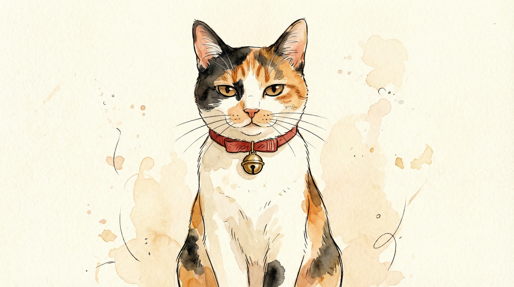

おかめ
にゃんこのパトロール隊
About Me
はじめまして、おかめです。毎日おうちの留守番をしたり、お庭のパトロールをしたりして、家族の安全を守るのが私のお仕事です。ひつじの観察をするのが大好きで、じーっと眺めていると時間が経つのを忘れてしまいます。パトロールの後は、暖かい場所でゆっくり昼寝をするのが至福のひととき。たまに庭で見つけた虫を追いかけるのも楽しみのひとつです。のんびり、でも真面目に毎日を過ごしています。
Hobbies
- 🐑 ひつじの観察
- 💤 昼寝
- 🐛 虫取り
Favorite Foods
- 🍔 ハンバーグ
- 🍳 オムライス
- 🍛 カレー